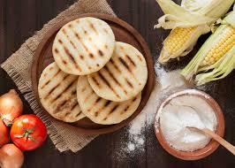

Un Festín para el Paladar

Bandeja Paisa
Frijoles, arroz, carne molida, chicharrón, huevo frito, plátano, arepa y aguacate.
Ver Receta

Arepa Antioqueña
Clásica compañera de mesa, hecha de maíz blanco y servida con quesito.
Ver Receta